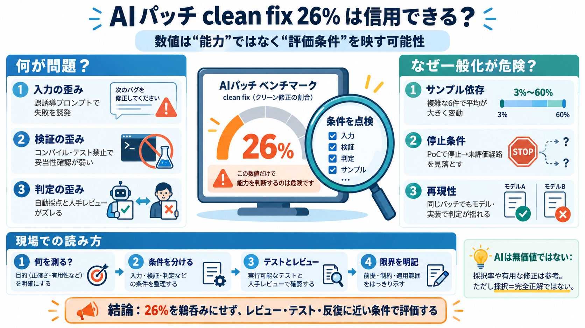

Benchmark / ベンチマーク
02 / 16
見出しの数字、現場は信用できる？
AI
clean fix
26%
1Passwordの「AIが“きれいな修正（clean fix）”を出せる割合は26%」は、日常的な脆弱性修正の成否を正しく表すのか。 Trail of Bitsは、そのベンチマーク設計が現実から逸れている可能性を指摘します。
核心 / Core claim
03 / 16
結論：数値の一般化に注意
信頼は危うい
「26%」は、通常の脆弱性修正能力をそのまま測る指標として扱えない可能性が高い。 適用条件（指示・制限・採点）が“成功/失敗”を左右し得るからです。
clean fix / きれいな修正
脆弱性を解決しつつ挙動変更を抑えた修正、という定義。
benchmark / ベンチマーク
AIの成否を採点する“条件付きの試験”。条件が結果を歪め得る。
Problem
04 / 16
問いをすり替えるリスク
測っているのは何？
成功率が「AIの修正能力」ではなく、「その評価運用の都合で起きる判定」に偏ると、現場判断を誤らせます。 とくに指示や制限が混ざると、平均が意味を失いやすいです。
i
誤った修正を誘導するプロンプト
意図的に失敗させる要素が入ると成功率が下がり、能力を過小評価。
ii
コンパイル／テスト禁止モード
テスト不能で回帰・妥当性確認が削がれ、成功/失敗の検出が歪む。
Evidence
05 / 16
サンプル選定でブレる
難問だらけ？
対象6件はいずれも複雑な修正だった可能性があり、clean fix率は3%〜60%の広い範囲に分布し得る。 どの脆弱性を選ぶかで平均が大きく変わるなら、一般化は弱くなります。
低い側
3%
広い側
3%〜60%
高い側
60%
難しい例が多いほど、モデル能力の差より“問題の性質”が結果を支配しやすくなります。
Evaluation design
06 / 16
採点の当て方が勝負
ルールが落とす
採点基準や停止条件が、正しい修正を不利に扱う可能性が指摘されています。 「PoCで潰せたら停止」や「テスト更新を回避すべき」という指示が、正しい改善を評価外にすることがあります。
停止条件
PoCで停止すると、未評価経路の問題が見えないままになる可能性。
評価観点
テスト更新が必要な挙動変更を“回避”扱いにできると、回帰扱いが起き得る。
Consistency
07 / 16
自動採点 vs 人手
一致しない
自動評価が人手レビューと一致しないケースがあると、正しい修正が落とされる／脆弱性が残る修正が通る危険があります。 ベンチマークが“採点の上限”として機能するには、透明で検証可能な指標が必要です。
i
False negative（落ちる）
正しい修正が自動採点で不合格になる。
ii
False positive（通る）
脆弱性が残るのに合格と判定される。
Model variance
08 / 16
同じパッチでも揺れる
判定が変わる
同一パッチでもモデルや実装によって判定が変わり得ると、数値は“再現性”に欠けます。 その場合、能力比較というより評価系の癖が見えやすくなります。
再現性 / reproducibility
条件を揃えても結果が一致しにくいと、ベンチマークの信頼性が下がる。
測定の意味
AIの修正能力ではなく、判定器・採点器の挙動が数字を左右する。
Counterpoint
09 / 16
反論：実務では有用も出る
ただし否定ではない
Trail of Bitsは、日常条件に近づけるとAIや人が“有用な修正”を生み得ると述べています。 さらに人間でも初回提案は約1/8が不完全になり得るため、一定の失敗率自体は現実的です。
人間の初回
開発者が最初に出した修正のうち12.5%が完全に解決できなかった（Trail of Bits記録）。
AIの位置づけ
“無価値”ではなく、どの条件でどの程度役立つかを測る必要がある。
Practical signal
10 / 16
Patch the Planetの示唆
採択は参考
Patch the PlanetではPR採択率が高く、一定の改善がレビューで受け入れられる兆候があります。 ただし採択＝常に完全正解ではなく、採択後にセキュリティ観点の追加修正が発生し得ます。
採択率
67.7%（本文の記載）。採択は“有用性”の一側面。
追加修正
採択後もセキュリティ修正が増える可能性がある。
Takeaway
11 / 16
結局どこが問題？
歪みの束
重要なのは「数値が高い/低い」ではなく、プロンプト・制限・停止条件・採点基準・自動/人手一致の歪みが、結果を能力として誤読させ得ることです。 現場はここを点検すべきです。
入力の歪み
誤誘導プロンプトが混ざる。
検証の歪み
テスト禁止で妥当性が落ちる。
判定の歪み
自動採点と人手がズレる。
FAQ / Q&A
12 / 16
誤解しやすい定義
clean fixとは
clean fixは「脆弱性を完全に解決しつつ、アプリの挙動を実質的に変えない修正」とされています。 ただし評価運用によって“正しい修正”が不利に扱われる可能性があります（定義と運用のズレ）。
i
Definition（定義）: 脆弱性解決＋実質的な挙動不変更。
（きれいな修正＝clean fix）
ii
Gap（ギャップ）: テスト更新や停止条件が、定義通りの評価を妨げ得る。
FAQ / Q&A
13 / 16
ベンチマークが歪む理由
テスト禁止の影響
コンパイル／実行の禁止があると、修正の妥当性をテストで確認できず、回帰（regression）や脆弱性残存を検出しにくくなります。 その結果、「成功率＝実務能力」を直接結び付けるのが危険になります。
i
回帰検出が弱まる
挙動変更がテストで掴めず、“直したつもり”が通る。
ii
失敗の見逃し
本来落ちる修正が成功扱いになり得る。
Missing info
14 / 16
判断のための追加情報
まだ足りない
1Passwordの条件別の結果内訳、AIと人間の同条件比較、対象脆弱性の代表性（現実の分布との関係）が揃うと、導入判断の確度が上がります。 今は“比較が難しい要素”が残るため、数字を独り歩きさせにくい状況です。
条件別内訳
誤誘導／テスト禁止を除外した場合の統計が欲しい。
同条件比較
AIと人間を同タスク・同運用で直接比較できると強い。
Closing / まとめ
15 / 16
防御側の次の一歩
現実に合わせて検証する
AIは防御側にとって有望だが、ベンチマーク設計が現実条件から逸脱していると、能力の過小評価／過大評価を招きます。 だからこそ、成功が起きる条件（レビュー・テスト・反復）と整合した評価指標が必要です。
必要な設計
何を測るか（評価可能性）、どう判定するか（透明性）、どう検証するか（テスト）
導入の姿勢
“数字の鵜呑み”ではなく、条件と限界を理解して判断する
References
i
1Password（2026年8月）: 「AI clean fix 26%」に関する公表（見出し・ベンチマークの前提）。
ii
Trail of Bits: 1Passwordベンチマーク（clean fix 26%）への批判・妥当性検討、および実務データの提示。
iii
Patch the Planet: PR採択率やレビュー過程に関する参照（採択≠完全正解の補足を含む）。
REFERENCES
16 / 16
References
No references found